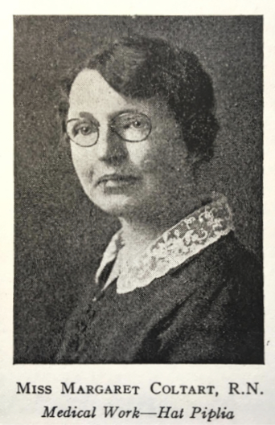

-1-MasterItem.svg)
Stories of Westminster United Church & its People / Page
186
Table
of Contents
approach to the nursing station, making the comment: “The day which
gave us piped water supply should have been marked in red letters on our
calendar.” There are several reports in the archives of her speaking at the
Women’s Missionary Society here at the Church on her visits back
to Winnipeg.
There is also mention of a Miss Dorothy Kilpatrick (BA), in 1914 who was
commissioned to Central India. She came to Winnipeg from Scotland where
her father was appointed a professor in Manitoba College and spent some
years in Winnipeg. When she graduated from Toronto University, Manitoba
still considered that she belonged to this Province and the Sunday School
of Westminster Church contributed largely to her support in India. Miss
Kilpatrick became very proficient in Hindi. She went on to write
a book of Indian Folk tales.
In 1953, a committee was established by the General Council of The United Church
of Canada
to study women’s work in the church with the goal of formally recognizing the work and
contribution
of United Church women. In 1956, the 17th General Council initiated the
Commission on the Work
of Women in the Church and the findings and recommendations of the commission
were released
in 1960 with the birth of United Church Women. General Council took action to
ensure that women
could share in a much more meaningful way in all the work of the church by
allowing them
to participate on the boards of The United Church at all levels. Approval was
given to this organization, United Church Women (UCW), at the General Council
meeting held in Edmonton, Alberta, in 1960 with UCW officially came into being
on January 1, 1962. Its purpose was: To unite women of the congregation for the
total mission of the church and to provide a medium through which we may
express our loyalty and devotion to Jesus Christ in Christian witness, study,
fellowship and service.
Westminster’
s
Women of NOte
